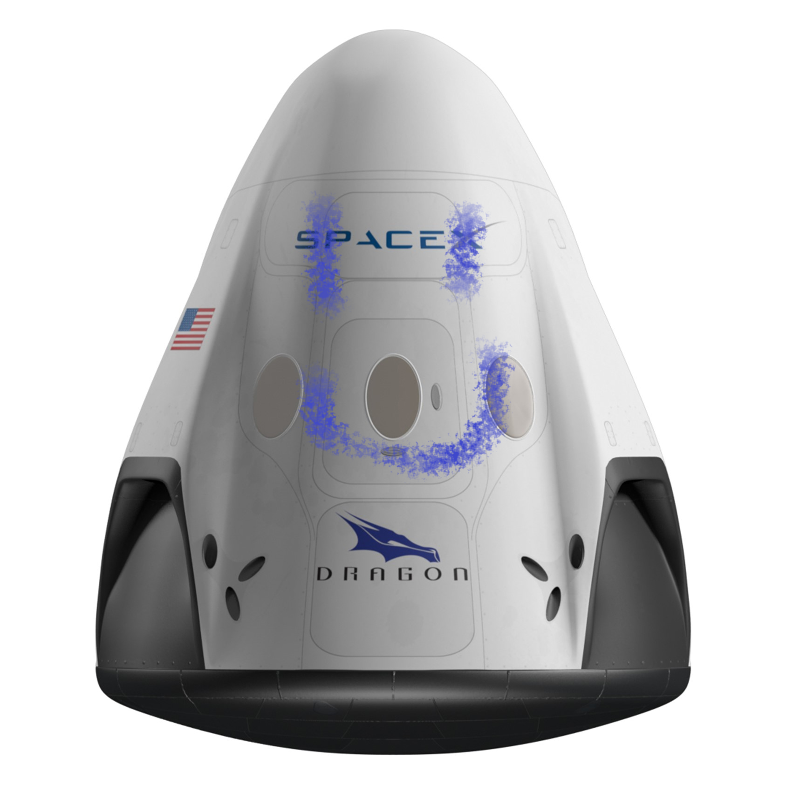

Hyperblog
Tu blog de confianza
Este es el título atractivo e interesante del post
Y este es el párrafo de inicio donde vamos a explicar las cosas increíbles que se pueden hacer con ramas

Los blogs son la mejor forma de compartir y tus ideas. Mucho mas que ir a conferencias o salir en Youtube. Excepto si eres un Rockstar. Pero estadisticamnete no lo eres....por ahora
Suscribete y dale like